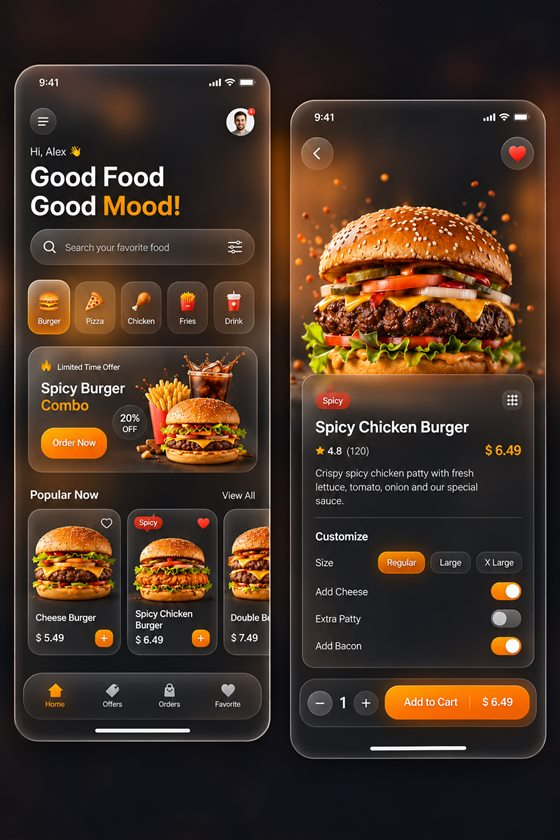
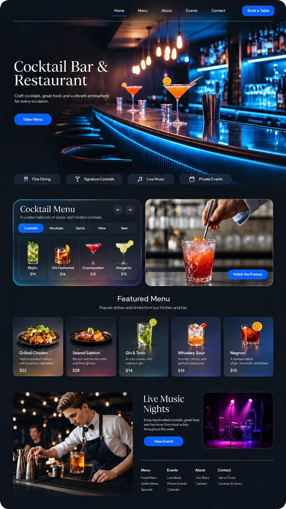
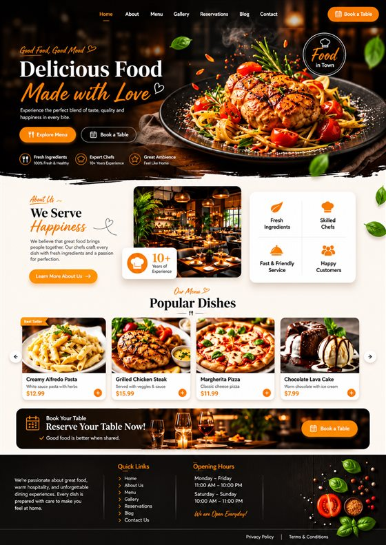
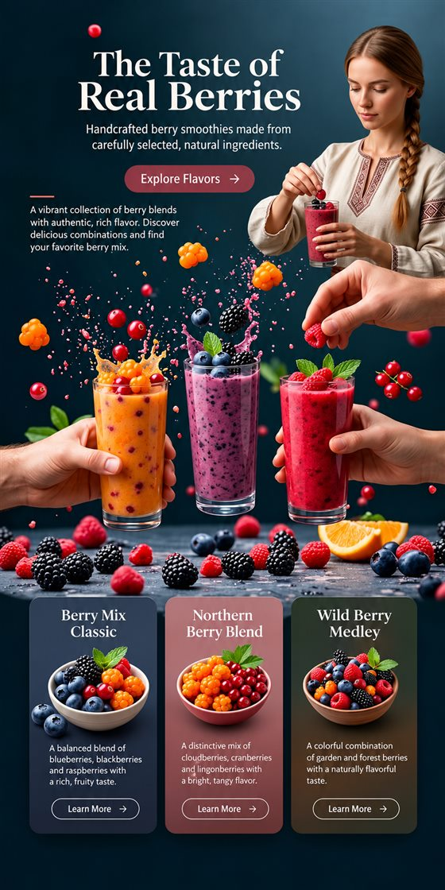
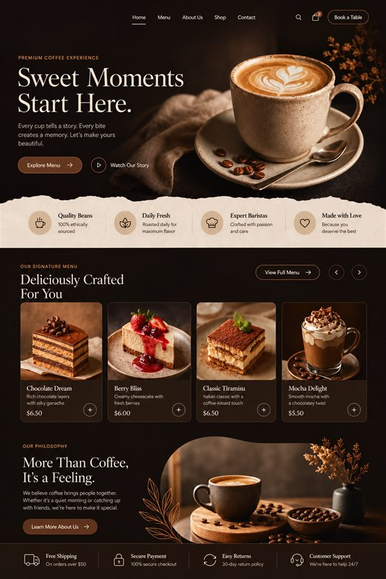
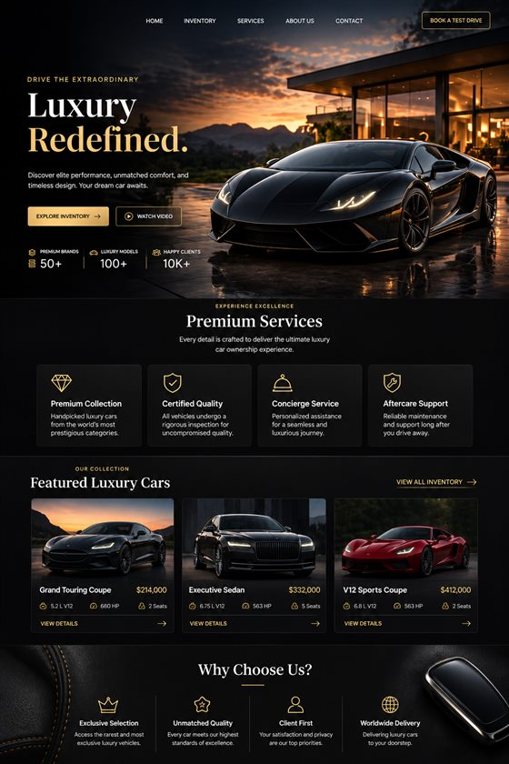
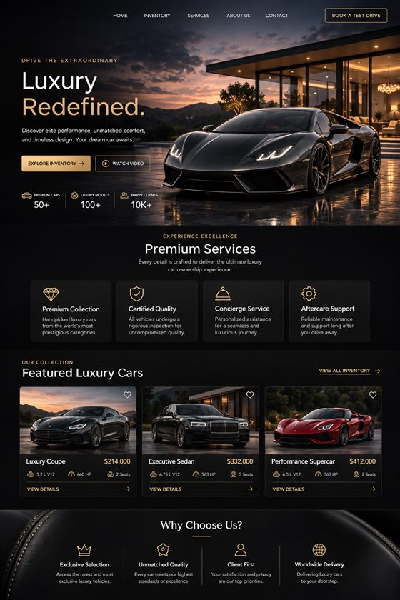

APP / FOOD ORDERING01 OF 07

Burger ordering app
Mobile UI concept · 1024 × 1536 px
Interface design / Sample concepts
Seven interface explorations across food, lifestyle and luxury. Open any frame to explore the complete screen.
01 / Mobile app
A food-ordering concept shown as a two-screen mobile flow.

Mobile UI concept · 1024 × 1536 px
02 / Web design
Landing page concepts with different visual systems and content hierarchies.

Hospitality landing page

Dining website concept

Product landing page

Cafe website concept

Automotive website concept

Alternate design direction
Seven supplied static UI concepts. Open a frame to view the complete PNG.